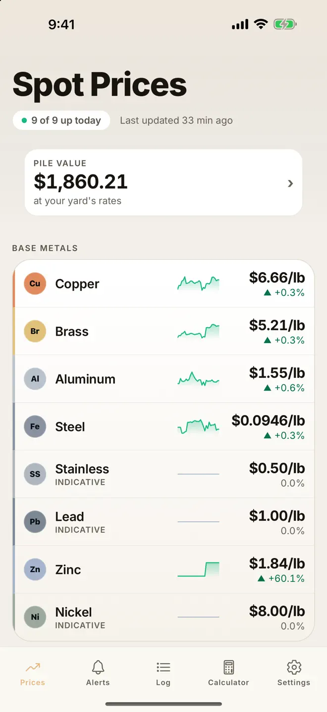
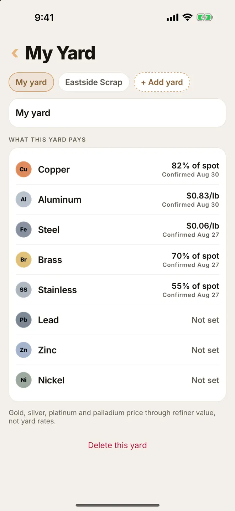
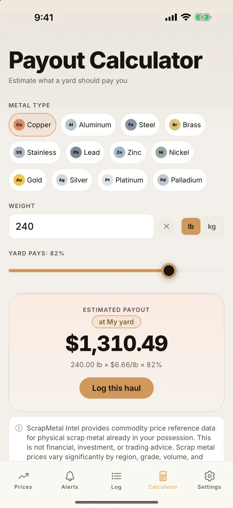

For the next trip to the yard
Track the market.Estimate your load.
Follow scrap metal commodity benchmarks, save the rates you confirm with your yard, and estimate what your load could be worth.
Download on the App StoreFor iPhone and iPad · In-app purchases available
Market benchmarks aren’t yard quotes.
Load estimates aren’t guaranteed payouts.

How it works
Start with the market. Make it your yard.
-
Get a market reference
Check metal prices and price movements. These are commodity benchmarks; some metals use indicative references rather than a live feed.
-
Enter a confirmed yard rate
Ask your yard what it pays for your scrap. In My Yard, save a percentage of spot or dollars per pound. Each rate shows the date you confirmed it.
-
Estimate before you load
Choose a metal and enter its weight. Use your saved yard rate in the calculator to estimate the load’s value, then log the haul in the app.
See the My Yard and calculator screens


Your yard sets the buying price. Keep your saved rates current and contact the yard for an actual quote. Prices vary by region, grade, volume, and yard; estimates are not guaranteed payouts. Screenshots show example values. Scrap Metal Intel is a commodity reference tool, not financial, investment, or trading advice.